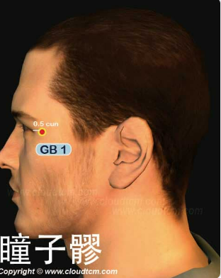

瞳子髎穴

位置：
目外眥外側0.5寸，眶骨外緣凹陷中
按摩手法：
手指按摩瞳子髎穴，可以促進眼部血液循環，治療常見的眼部疾病，並可以去除眼角皺紋。為了提高按摩效果，首先必須將雙手搓熱，然後用搓熱的手掌在眼皮上一邊吐氣一邊輕撫，上下左右各6次。其次再以同樣要領將眼球向左右各轉6次。
穴道介紹：
瞳子髎穴功效「疏散風熱，明目退翳，平肝熄風」。主治頭痛，目痛，目赤，目翳，迎風流淚，視力減退，內障，青盲，口眼歪斜，角膜炎，面神經麻痹，三叉神經痛，視神經萎縮，青少年近視眼，青光眼，結膜炎。
現代研究心放血治療麥粒腫，三棱針快速刺入瞳子髎穴，出血數滴，放血宜隔日1次，治療期間每日熱敷患處數次，1次10~15分鐘。98例患者，經放血1次而愈者達95%。
針剌治療坐骨神經痛，取患側瞳子髎穴、睛明穴，睛明垂直進針0.3~0.5寸，瞳子髎穴向外平刺0.3~0.5寸，7次爲1療程。治療150例，總有效率100%。
穴名介紹：
瞳子，指眼；髎，指穴位。本穴為膽經頭面部的第一穴，手太陽手足少陽之會。